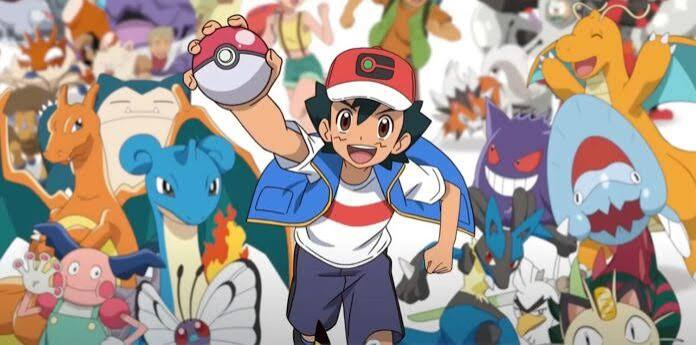

O anime Pokémon estreou em 1997 e acompanhou por 25 anos o garoto Ash Ketchum e seu fiel Pikachu em sua jornada para se tornar um Mestre Pokémon, enfrentando ginásios e a Equipe Rocket.
A Era de Ash Ketchum (1997–2023)O Início: Ash ganha um Pikachu teimoso do Professor Carvalho após acordar atrasado.Amigos e Rivais: Ele viaja ao lado de companheiros como Misty e Brock, enfrentando rivais e a atrapalhada Equipe Rocket.O Objetivo: O sonho de Ash era virar um Mestre Pokémon, o que ele finalmente conseguiu alcançar em especiais de despedida após vencer campeonatos mundiais